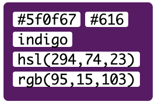
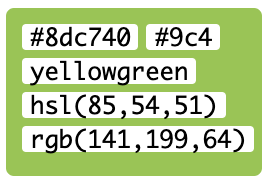

Training Events - GenOn Ministries

Churches have started to realize an issue where young parishioners get confirmed (the last step to becoming full fledged members of the church) and then stop regularly attending church.
GenOn Ministries is a Christian Nonprofit that hopes to counteract this issue by providing ministries with resources to help develop intergenerational ministry. Youth programs within ministries are commonly siloed off from the rest of the church. With this dynamic, young churchgoers have little involvement with the other age demographics within a ministry. This leads to an institutionalized idea that upon confirmation a church members regular attendance should sharply decline.
With the intergenerational ministry that GenOn has developed, young parishioners are involved with the other generations and develop a view of their faith and involvement with the ministry as a lifelong commitment.
I had the following responsibilities for this project:
 |
 |
 |
Church administration that is untrained in leading and providing intergenerational expereinces for parishioners, will see markedly less success.
In other workds, the success of GenOn's services is directly dependent on the extent to which their partner churches regularily attend their training events.
GenOn's current website is not entirely conducive to converting users into training event attendees.
| Heuristic | Score | Value |
|---|---|---|
| Visibility of system status | 3/3 | 75-100% |
| Match between system and the real world | 1/3 | 25-49% |
| User control and freedom | 2/3 | 50-74% |
| Consistency and standards | 3/3 | 75-100% |
| Error prevention | 2/3 | 50-74% |
| Recognition rather than recall | 3/3 | 75-100% |
| Flexibility and efficiency of use | 3/3 | 75-100% |
| Aesthetic and minimalist design | 1/3 | 25-49% |
| Help users recognize, diagnose, and recover from errors | 3/3 | 75-100% |
| Help and documentation | 3/3 | 75-100% |
I worked with the executive member of GenOns board of directors to create a user persona to guide the development of this user experience. Referring back to this user persona has ensured that every part of this user experience is working to serve Greg’s needs.

I created this wireflow using whimsical. This process helped me determine the scope of the project that I was taking on.

Starting with the wireflow gave me a clear idea of how I wanted each of my screens. Using Sketch, I brought the screens from the low fidelity to a nice mid-fidelity for user testing.


Using InVision I drafted a clickable prototype to present to users during my user testing. I decided to use InVision instead of other prototyping tools like Sketch’s built in prototyper, Principle, or Adobe XD for a couple of reasons: Speed I needed to get this project done in a very short window of time. Having used InVision several times before I felt that I could rapidly create a solid prototype. Cost I did not have access to better, paid prototyping tools. InVision allows me to permanently host one prototype online, per account. Cost InVision allowed me to easily transfer my prototype to anyone with access to a browser, on a desktop or mobile device. Click Here to view the clickable prototype that was given to users during round 2 of user testing.
I performed two rounds of moderated user testing and one round of AB Testing.
In this round of user testing I interviewed customers at Dogwood Coffee and Spyhouse coffee in Northeast Minneapolis. Here are some of the takeaways from this round of user testing:

After this round of testing I implmented the following improvements:

In this round of user testing I interviewed customers at a Spyhouse coffee in downtown Minneapolis. Here are some of the takeaways from this round of user testing:
.png)
After this round of testing I made the following designs

Once I had the user testing ironed out, the final step of this project was to add some color. To make this project practical for my client I used their brand colors in my designs:   I placed the following screens in front of 15 people at Spyhouse Coffee on Washington Ave:

I set out with the goal to expand my knowledge of user experience design beyond what I learned in my previous projects. I implemented a heuristic analysis to get insights into what aspects I would focus on when redesigning the training flow. I conducted AB testing as part of the user testing which helped me add some color to my slides. Overall, I am very happy with the deliverables I have produced from this project. Here is what the final screens look like:


I expanded my knowledge of user experience design throughout this project. Here are the three key takeaways that will strengthen my designs in the future: